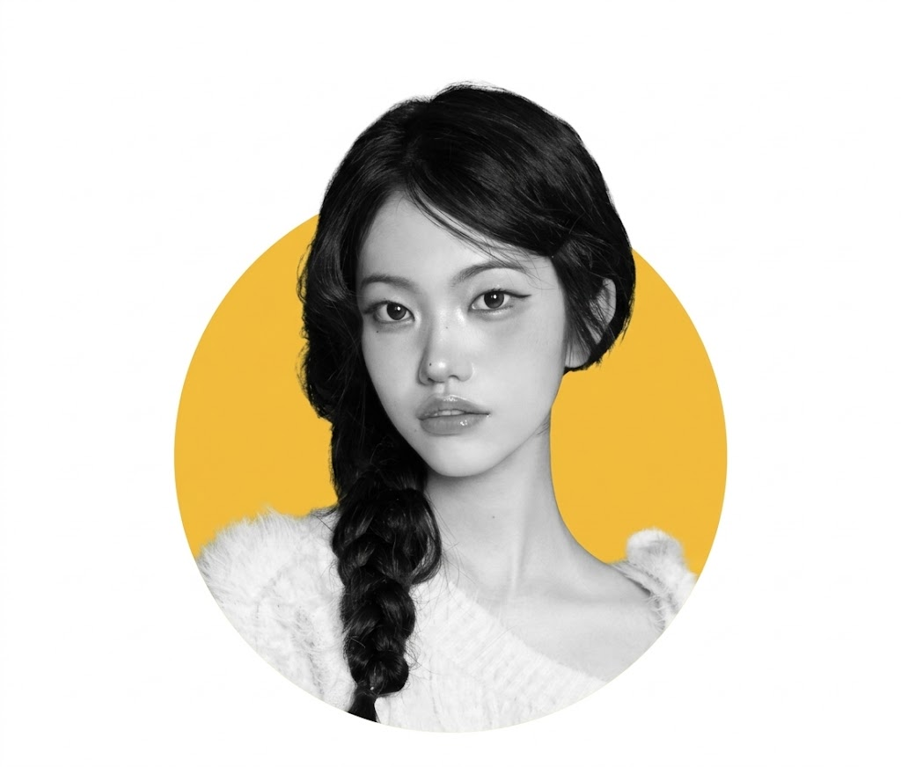
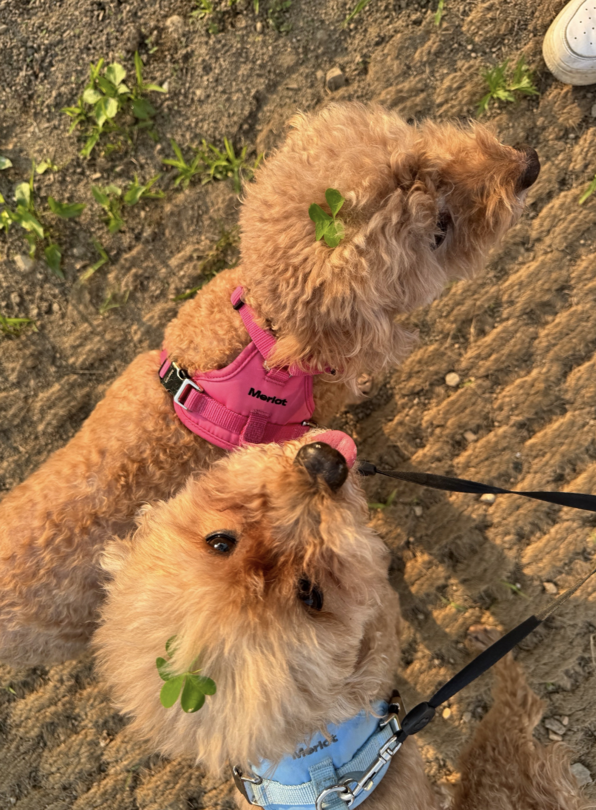
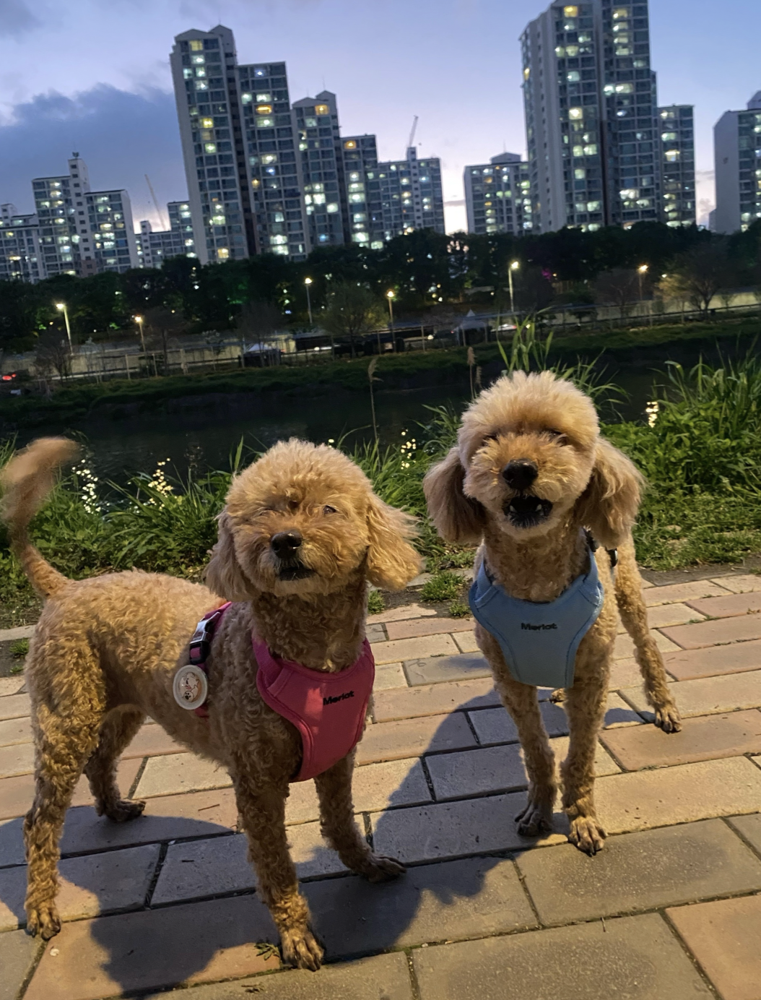
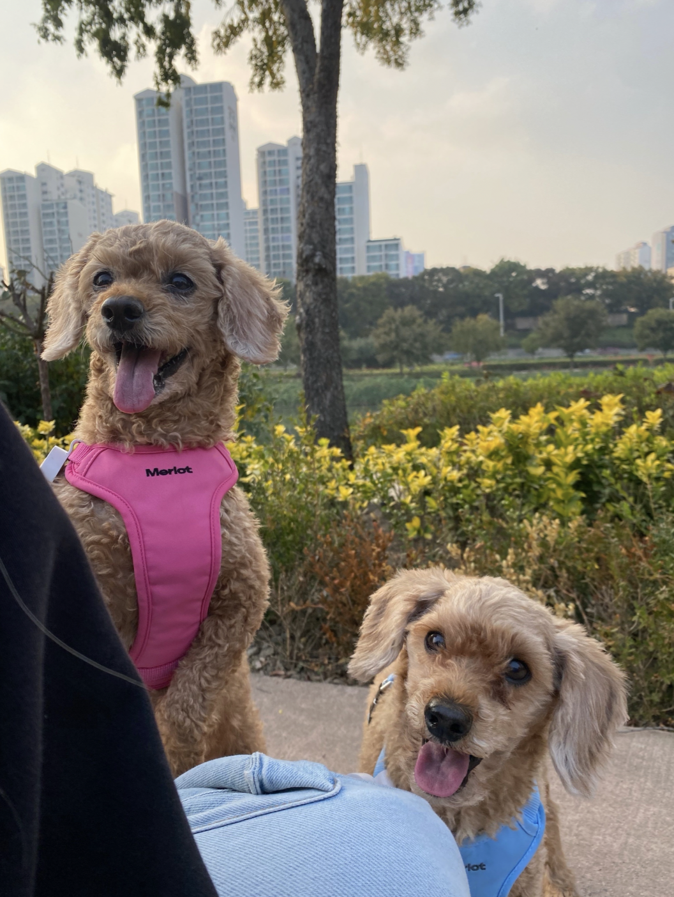
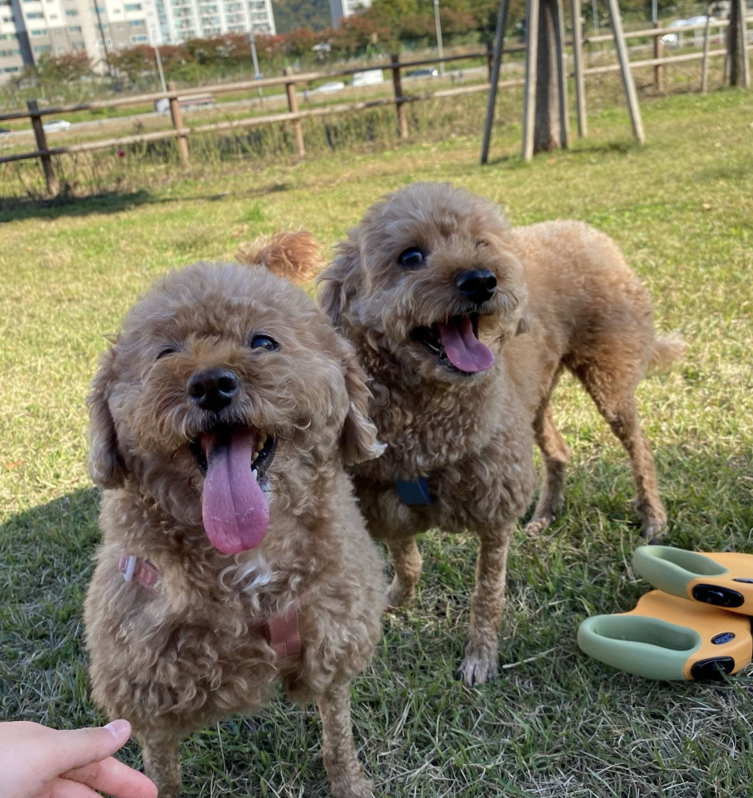
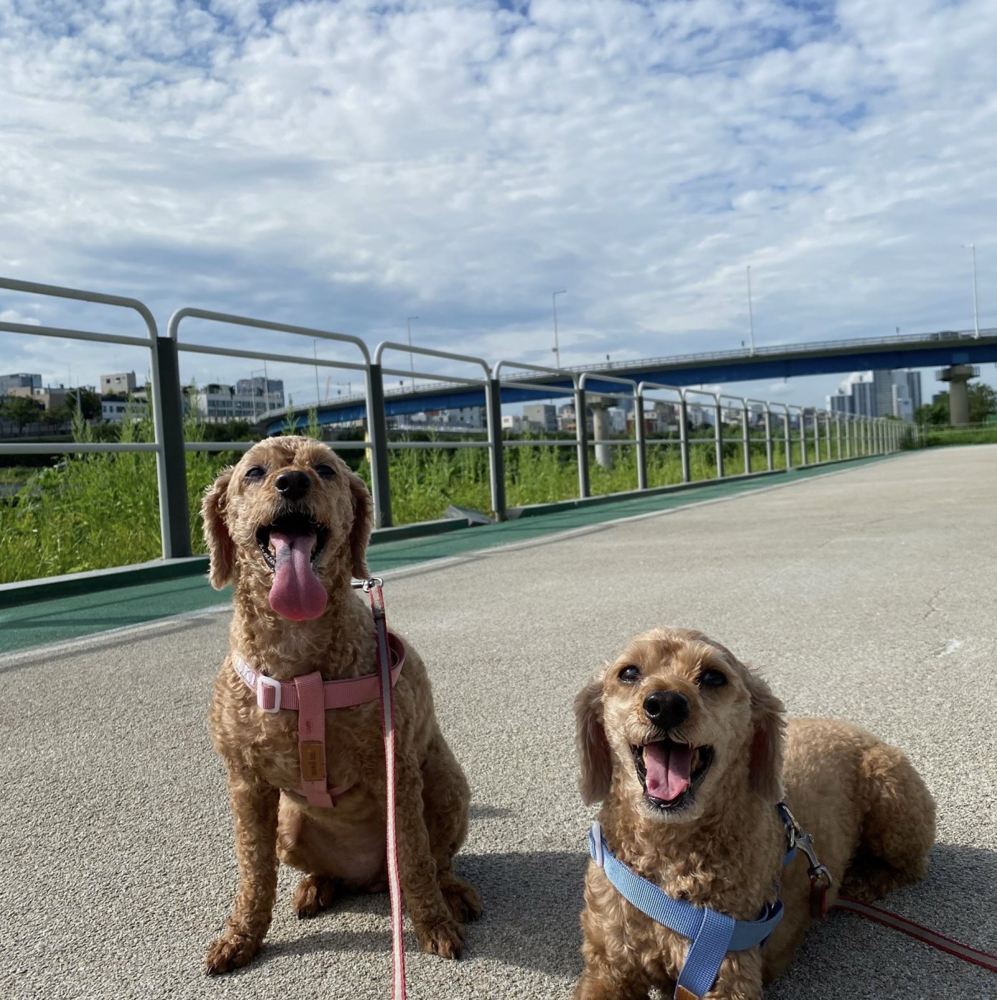

JANG SEO HU
Birth date : 2001.10.17
Mobile : 010-2171-9054
E-mail : jangseohu@skuniv.ac.kr
MBTI : INFJ
안녕하세요 😊 이번에 14기 프론트엔드 아기사자를 맡게 된 소프트웨어학과 22학번 장서후입니다.
배우고 싶은 게 정말 많아서 멋쟁이사자처럼에서 알찬 1년을 보내고 싶습니다.
프론트엔드 활동을 하고 있지만, 스프링부트와 디자인에도 관심이 있어서 풀스택 개발자를 목표로 하고 있습니다.
혼자 프로젝트를 많이 했지만, 앞으로는 다양한 사람들과 협업하며 프로젝트를 배포해보고 싶습니다!
Frontend
Backend
Collab Tools





Name : 딸기(핑크) , 콩(파랑)
Age : 13
Breed : Toy Poodle
딸기 성격 : 식탐이 많고 엉덩이 붙이고 있는걸 좋아함. 방구냄새 좋아함
콩이 성격 : 눈치가 빠름. 재채기,기침을 싫어함. 재채기하면 도망감(주인이 감기걸리면 나을때 까지 근처에도 안옴)